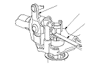
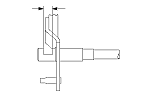

M/T Change Lever Clearance Inspection
Measure the clearance between change lever (A) and the select lever (B) with a feeler gauge (C). If the clearance is more than the service limit, go to
Step 2
.
Standard:
0.05−0.25 mm (0.002−0.010 in.)
Service Limit:
0.5 mm (0.020 in.)

Measure the groove of the change lever.
If distance is not within the standard, replace the change lever with a new one.
If distance is within the standard, replace the select lever with a new one.
Standard:
15.00−15.10 mm (0.591−0.594 in.)
